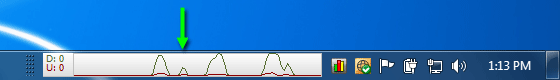

Version: Default* | Print Friendly With Images | Print Friendly Without Images
For: Windows XP (32) | Windows Vista (32/64) | Windows 7 (32/64) | Windows 8 (32/64)
Last Reviewed/Updated: 18 Feb 2014 | Published: 13 Jan 2012 | Status: Active
Unexpected and/or excessive computer network activity is a warning sign that the computer might be infected with malware. Therefore, as an in-depth method for detecting malware infection, it is recommended that users monitor their computers for unexpected and/or excessive computer network activity.
The Windows XP notification area Network icon animates (i.e., the icon's monitors light up) when the computer is sending/receiving data over a network. The Windows Vista notification area Network icon also animates when the computer is sending/receiving data over a network. This behavior, however, is disabled by default. To enable the Windows Vista notification area Network icon animation, right click the notification area Network icon and select Turn on activity animation. Unlike the Windows XP/Vista notification area Network icon, the Windows 7/8 notification area Network icon does not animate when the computer is sending/receiving data over a network. In sum, the Windows XP/Vista notification area Network icon, not the Windows 7/8 notification area Network icon, is a lightweight and unobtrusive tool that monitors and displays the presence/absence of computer network activity.
The problem with the Windows XP/Vista notification area Network icon is twofold. First, it displays the presence/absence of computer network activity, not the amount of computer network activity. Second, it displays computer network activity in real time, not over time. This means, in order to detect unexpected computer network activity, you might have to stop what you were doing and stare at the Windows XP/Vista notification area Network icon for an extended period of time, which is impractical. A better solution is a tool that not only displays the presence/absence of computer network activity in real time, but the amount of computer network activity over time. SoftPerfect NetWorx is a lightweight, unobtrusive, free application that displays the computer network transfer rate in each direction over time.
2. Options For Displaying Computer Network Activity
NetWorx provides three options for displaying computer network activity; 1.) desk band, 2.) graph, and 3.) tray icon. Each option can be used separately, or any combination of the three options can be used simultaneously. Each option can display the computer network transfer rate in each direction over time.
The desk band appears as a taskbar toolbar (right click taskbar | Toolbars | NetWorx Desk Band). The width of the desk band corresponds to time and can be changed with the mouse (requires unlocking the taskbar). The desk band display options are histogram, polyline (shown), and numeric.

The graph appears on the desktop. The width of the graph corresponds to time, the height of the graph corresponds to transfer rate, and both can be changed with the mouse. The position of the graph on the desktop can be changed with the mouse. The graph display options are histogram, polyline (shown), and numeric.
The tray icon appears in the notification area. The tray icon display options are histogram, thick bars (shown), and thin bars.
2.4. The Desk Band, Graph, And Tray Icon Shown Simultaneously